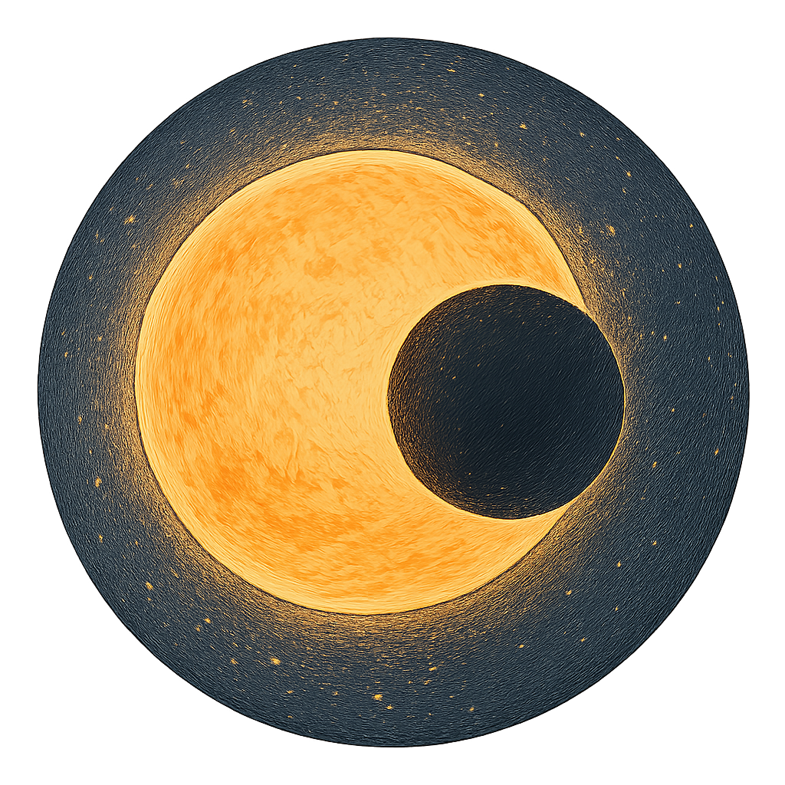

Projects

Observing Transiting Exoplanets
Used the Leicester University observatory to calculate the radii of exoplanets HAT-P 61 b, XO-3 b and unpublished candidate exoplanet TOI-3887 using measured decreased flux from their respective host stars. Making conclusions on not only the radius of each star but orbital and planetary characteristics.

Lunar Environment Assessor and Forecaster (LEAF)
A project making it to the final of Space Park Leicester's Enterprise Challenge, the Lunar Environment Assessor and Forecaster (LEAF) is an application to monitor and predict environmental data on the lunar surface. Working with Meridian Space Command we used Python to create a data prediction model using machine learning.

Project 3
description